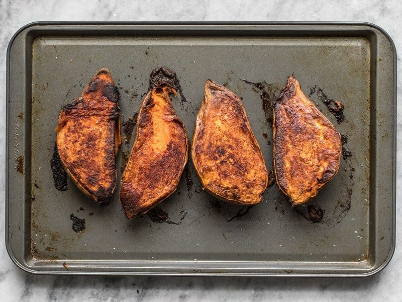

Baked Sweet Potatoes

Description
This is a go-to recipe for busy nights when you don't feel like cooking!
These sweet potatoes are the perfect mix of sweet and savory.
A comfort food for any time of year!
Ingredients
- 2 medium sweet potatoes (washed)
- 1 to 2 tbsps extra virgin olive oil
- 1/2 tsp cayenne pepper
- 2 tsp cinnamon
- salt to taste
Steps
- Preheat oven to 400 degrees fahrenheit with a rack in the center of the oven.
- Wash sweet potatoes and poke holes across the entire surface with a fork.
- Cut sweet potatoes in half lengthwise.
- On an oven-safe sheet pan, place the cut sweet potatoes and cover in olive oil and spices. Make sure the entire potato is evenly coated.
- With the sweet potatoes cut facedown on the sheet pan, place the sheet pan on the center rack and roast for 45-50 minutes.
- Take the sweet potatoes out of the oven, let cool, and enjoy!
Home